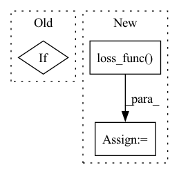

Pattern ID :22769

Before Change
else:
x_recon = self.denoise_fn(
torch.cat([x_in["SR"], x_noisy], dim=1), continuous_sqrt_alpha_cumprod)
if self.loss_type == "l1":
loss = (noise - x_recon).abs().mean()
elif self.loss_type == "l2":
loss = F.mse_loss(noise, x_recon)
After Change
x_recon = self.denoise_fn(
torch.cat([x_in["SR"], x_noisy], dim=1), continuous_sqrt_alpha_cumprod)
loss = self.loss_func(noise, x_recon)
return loss
def forward(self, x, *args, **kwargs):
return self.p_losses(x, *args, **kwargs)
In pattern: SUPERPATTERN
Frequency: 3
Non-data size: 3
Instances
Fragment ID: 72251646
Project Name: janspiry/image-super-resolution-via-iterative-refinement
Commit Name: 9be9afd41586869659337dae0107bfce0c449f0c
Time: 2021-08-19
Author: lw_jiang@foxmail.com
File Name: model/sr3_modules/diffusion.py
M Class Name: GaussianDiffusion
N Class Name: GaussianDiffusion
M Method Name: p_losses(3)
N Method Name: p_losses(3)
M Parent Class: nn.Module
N Parent Class: nn.Module
M File Name: model/sr3_modules/diffusion.py
N File Name: model/sr3_modules/diffusion.py
M Start Line: 227
M End Line: 243
N Start Line: 235
N End Line: 245
'>
Before Change
torch.cat([x_in["SR"], x_noisy], dim=1), t)
if self.loss_type == "l1":
loss = (noise - x_recon).abs().mean()
elif self.loss_type == "l2":
loss = F.mse_loss(noise, x_recon)
else:
raise NotImplementedError()
After Change
else:
x_recon = self.denoise_fn(
torch.cat([x_in["SR"], x_noisy], dim=1), t)
loss = self.loss_func(noise, x_recon)
return loss
def forward(self, x, *args, **kwargs):
'>
Fragment ID: 72251653
Project Name: janspiry/image-super-resolution-via-iterative-refinement
Commit Name: 9be9afd41586869659337dae0107bfce0c449f0c
Time: 2021-08-19
Author: lw_jiang@foxmail.com
File Name: model/ddpm_modules/diffusion.py
M Class Name: GaussianDiffusion
N Class Name: GaussianDiffusion
M Method Name: p_losses(3)
N Method Name: p_losses(3)
M Parent Class: nn.Module
N Parent Class: nn.Module
M File Name: model/ddpm_modules/diffusion.py
N File Name: model/ddpm_modules/diffusion.py
M Start Line: 276
M End Line: 291
N Start Line: 284
N End Line: 292
'>
Before Change
self.loss_func = torch.nn.MSELoss()
else:
raise NotImplementedError("Loss function {} name not defined".format(self.loss_func))
elif callable(self.loss_func):
pass
elif issubclass(self.loss_func.__class__, torch.nn.modules.loss._Loss):
pass
After Change
if callable(self.loss_func) and isinstance(self.loss_func, types.FunctionType):
self.loss_func_name = self.loss_func.__name__
elif issubclass(self.loss_func().__class__, torch.nn.modules.loss._Loss):
self.loss_func = self.loss_func(reduction="none")
self.loss_func_name = type(self.loss_func).__name__
else:
raise NotImplementedError("Loss function {} not found".format(self.loss_func))
'>
Fragment ID: 72251648
Project Name: ourownstory/neural_prophet
Commit Name: 9facbe684e864b90c084064d14a8f8197ae044e3
Time: 2022-02-16
Author: ourownstory@users.noreply.github.com
File Name: neuralprophet/configure.py
M Class Name: Train
N Class Name: Train
M Method Name: __post_init__(1)
N Method Name: __post_init__(1)
M Parent Class:
N Parent Class:
M File Name: neuralprophet/configure.py
N File Name: neuralprophet/configure.py
M Start Line: 96
M End Line: 99
N Start Line: 91
N End Line: 113